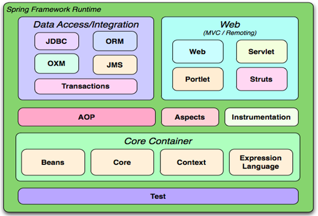
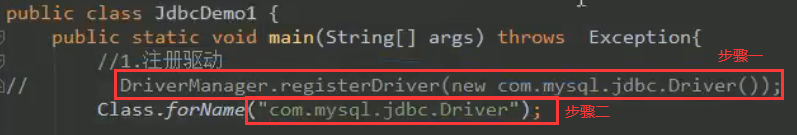
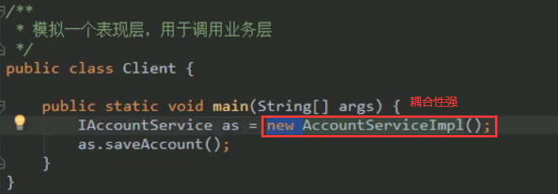
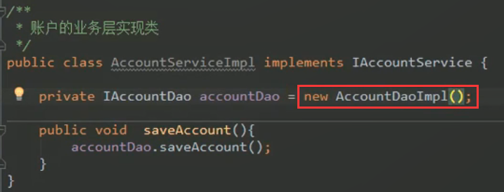
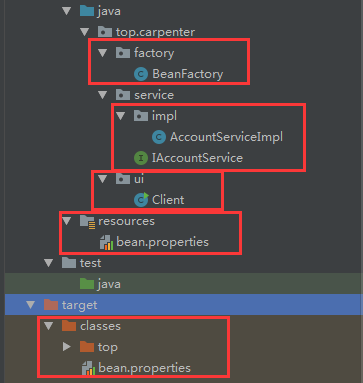
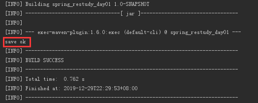
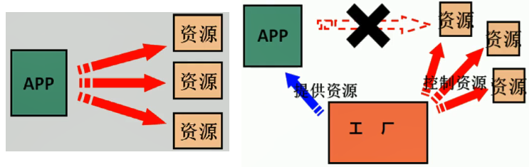
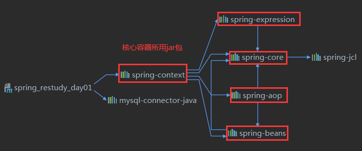
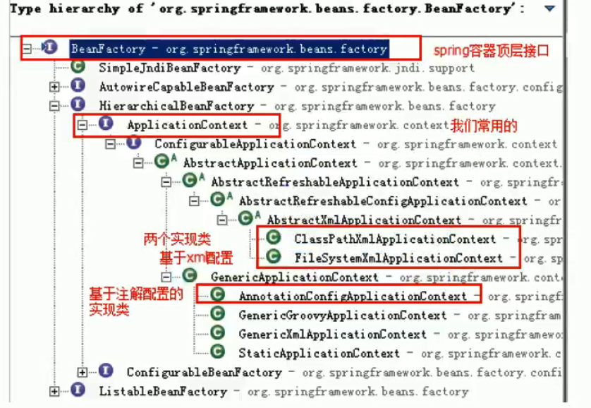

Spring FrameWork
1.Spring FrameWork
Spring是一个开源框架，Spring是于2003年兴起的一个轻量级的Java开发框架，它是为了解决企业应用开发的复杂性而创建的。
Spring使用基本的
JavaBean来完成以前只可能由EJB完成的事情。然而，Spring的用途不仅限于服务器端的开发。从简单性、可测试性和松耦合的角度而言，任何Java应用都可以从Spring中受益。简单来说，Spring是一个轻量级的控制反转（IoC）和面向切面（AOP）的容器框架。
1.1.Sping 优点
方便解耦，简化开发
- Spring就是一个大工厂，专门负责生成
Bean，可以将所有对象创建和依赖关系维护由Spring管理
- Spring就是一个大工厂，专门负责生成
提供面向切面编程
- 方便的实现对程序进行权限拦截、运行监控等功能
声明式事务的支持
- 只需要通过配置就可以完成对事务的管理，而无需手动编程
方便程序的测试
- Spring对Junit4支持，可以通过注解方便的测试Spring程序
方便集成各种优秀框架
- 内部提供了对各种优秀框架（如：
Struts Hibernate MyBatis Quartz等）的支持
- 内部提供了对各种优秀框架（如：
降低
JavaEE API的使用难度- 对JavaEE开发中一些难用的API（JDBC、JavaMail、远程调webservice用等）都提供了封装，使这些API应用难度大大降低
1.2.体系结构

Core Container——其他所有内容都需要核心容器（IOC）支持- Core technologies: dependency injection, events, resources, i18n, validation, data binding, type conversion, SpEL, AOP.
- Testing: mock objects, TestContext framework, Spring MVC Test,
WebTestClient. - Data Access: transactions, DAO support, JDBC, ORM, Marshalling XML.
- Spring MVC and Spring WebFlux web frameworks.
- Integration: remoting, JMS, JCA, JMX, email, tasks, scheduling, cache.
- Languages: Kotlin, Groovy, dynamic languages.
1.3Spring编程的风格
- 可以配合使用
schemal-based------xmlannotation-based----- annotationjava-based----java Configuration
2.Spring IOC原理入门
2.1.问题：程序间耦合
耦合——程序间的依赖关系
- 类（jar包）之间的依赖
- 方法之间的依赖
实际开发中——目标：编译期不依赖，运行时依赖（方便动态代理，让Spring返回我们需要的对象【是否添加AOP/事务控制内容】）
解耦思路
- 步骤一：使用反射创建对象，而避免使用new关键字–>导致字符串写‘死’
- 步骤二：通过读取配置文件来获取要创建的对象全限定类名
以
JDBC为例
以视图层-业务层-表现层为例
- 以下两张图耦合性非常强


2.2.解决方案
- 创建
Bean对象工厂Bean：可重用组件- 第一步：一个配置文件中
唯一标识id=全限定类名(key=value)（配置service和dao对象信息）- 配置文件种类：
xml/properties
- 配置文件种类：
- 第二步：通过读取配文件中配的内容，反射创建对象

bean.properties
1 | accountService=top.carpenter.service.impl.AccountServiceImpl |
IAccountService.java&AccountServiceImpl.java
1 | package top.carpenter.service; |
BeanFactory.java多例版本
1 | package top.carpenter.factory; |
BeanFactory.java单例版本
1 | package top.carpenter.factory; |
Client.java
1 | package top.carpenter.ui; |

3.控制反转(IOC)
- 控制反转：把创建对象的权利交给框架，由框架控制对象的生命周期，是框架的重要特征
- IOC作用：削减计算机程序的耦合，降低程序间的依赖关系

3.1.Spring IOC容器构建
pom.xml
1 | <!--这个依赖可以解决Spring IOC 90%功能--> |

核心容器本质是个Map
applicationContext.xml
1 |
|
- Client.java
1 | package top.carpenter.ui; |
Spring工厂类结构图

BeanFactory是核心容器的顶层接口三个常用实现类
ClassPathXmlApplicationContext——可以加载类路径下的配置文件，要求配置文件必须在类路径下，否则加载不了。FileSystemXmlApplicationContext——可以加载磁盘任意路径下的配置文件(必须有访问权限)AnnotationConfigApplicationContext——用于读取注解创建容器的
两个常用接口
BeanFactory——构建核心容器时，创建对象采取的策略是采用延迟加载的方式。即根据id获取对象时才创建对象ApplicationContext——构建核心容器时，创建对象采取的策略是采用立即加载的方式。即只要读取完配置文件马上就创建配置文件中配置的对象
3.2.Bean的三种创建方式
3.2.1.使用默认构造函数创建，并存入spring容器
在spring的配置文件中使用
bean标签，配以id和class属性之后，且没有其他属性和标签构造函数创建
bean对象，此时如果类中没有默认构造函数，则对象无法创建applicationContext.xml1
<bean id="accountService" class="top.carpenter.service.impl.AccountServiceImpl"></bean>
3.2.2.使用普通工厂中的方法创建对象/使用某个类中的方法创建对象，并存入spring容器
InstanceFactory.java1
2
3
4
5
6
7
8
9
10
11
12// 模拟存在于jar包中的 我们无法修改
package top.carpenter;
import top.carpenter.service.IAccountService;
import top.carpenter.service.impl.AccountServiceImpl;
public class InstanceFactory {
public IAccountService getIAccountService()
{
return new AccountServiceImpl();
}
}applicationContext.xml1
2
3<bean id="instanceFactory" class="top.carpenter.InstanceFactory"></bean>
<bean id="accountService" factory-bean="instanceFactory" factory-method="getIAccountService"></bean>
3.2.3.使用工厂中的静态方法创建对象/使用某个类中的静态方法创建对象，并存入spring容器
InstanceFactory.java1
2
3
4
5
6
7
8
9
10
11
12// 模拟存在于jar包中的 我们无法修改
package top.carpenter;
import top.carpenter.service.IAccountService;
import top.carpenter.service.impl.AccountServiceImpl;
public class InstanceStaticFactory {
public static IAccountService getIAccountService()
{
return new AccountServiceImpl();
}
}applicationContext.xml1
<bean id="accountService" class="top.carpenter.InstanceStaticFactory" factory-method="getIAccountService"></bean>
3.3.Bean对象的作用范围
用于指定
bean的作用范围singleton——单例（默认）prototype——多例request——作用于web应用的请求范围session——作用于web应用的会话范围global-session——作用于集群环境的会话范围（全局会话范围），当不是集群环境时，它就是session
在
Singleton当中引用了一个Prototype的bean的时候，会使得Prototype失效容器只创建单例Singleton一次，只有一次机会设置属性值
解决问题
1
2
3
4
5
6
7
8
9
10
11
12
13
14//单例的
public class UserService1 implements ApplicationContextAware
{
private ApplicationContext applicationContext;
private UserDao userDao; //原型的
public void setApplicationContext(ApplicationContext applicationContext) throws BeansException {
this.applicationContext = applicationContext;
}
}
3.4.Bean对象的生命周期
- 单例对象
- 创建：当容器创建时，对象创建
- 存活：容器存在，对象一直存在
- 销毁：与容器同时销毁
- 多例对象
- 创建：当使用对象时，容器创建对象
- 存活：对象只要使用过程中就一直活着
- 销毁：长时间不用，且没有其他对象引用时，由JVM自动回收
4.依赖注入(Dependency Injection)
IoC的作用：降低程序间的耦合(依赖关系)- 依赖关系的管理：
- 在当前类需要用到其他类的对象，由
spring为我们提供，我们只需要在配置文件中说明 - 以后都交给
spring来维护依赖关系，就称之为依赖注入
- 在当前类需要用到其他类的对象，由
- 依赖注入的数据
- 基本类型和
String - 其他
bean类型(在配置文件中或者注解配置过的bean) - 复杂类型/集合类型
- 基本类型和
4.1.依赖注入的方式
4.1.1.使用构造函数提供
AccountServiceImpl.java1
2
3
4
5
6
7
8
9
10
11
12
13
14
15
16
17
18
19
20
21
22
23package top.carpenter.service.impl;
import top.carpenter.service.IAccountService;
import java.util.Date;
public class AccountServiceImpl implements IAccountService {
private String name;
private int age;
private Date birthday;
public AccountServiceImpl(String name, int age, Date birthday) {
this.name = name;
this.age = age;
this.birthday = birthday;
}
public void save()
{
System.out.println(this.name);
System.out.println(this.age);
System.out.println(this.birthday);
}
}bean.xml1
2
3
4
5
6
7
8
9
10
11
12
13
14
15
<beans xmlns="http://www.springframework.org/schema/beans"
xmlns:xsi="http://www.w3.org/2001/XMLSchema-instance"
xsi:schemaLocation="http://www.springframework.org/schema/beans
http://www.springframework.org/schema/beans/spring-beans.xsd">
<!-- 配置文件中`唯一标识==全限定类名(key=value)`-->
<bean id="accountService" class="top.carpenter.service.impl.AccountServiceImpl">
<constructor-arg name="name" value="yyx"/>
<constructor-arg name="age" value="18"/>
<constructor-arg name="birthday" ref="date"/>
</bean>
<bean id="date" class="java.util.Date"/>
</beans>使用的标签：
constructor-arg标签出现的位置：
bean标签的内部标签中的属性
type：用于指定要注入的数据的数据类型，该数据类型也是构造函数中某个或某些参数的类型（容易混）index：用于指定要注入的数据给构造函数中指定索引位置的参数赋值。索引的位置是从0开始name：用于指定给构造函数中指定名称的参数赋值【常用】
=================以上三个用于指定给构造函数中哪个参数赋值============value：用于提供基本数据类型和String类型的数据ref：用于指定其他的bean类型数据。它指的就是在spring的IoC核心容器中出现过的bean对象
优势
- 在获取
bean对象时，注入数据是必须的操作，否则对象无法创建成功
- 在获取
劣势
bean对象的实例化方式，使我们在创建对象时，如果用不到这些数据，也必须提供
4.1.2.使用set方法提供
AccountServiceImpl.java
1 | package top.carpenter.service.impl; |
bean.xml
1 |
|
- 使用的标签：
property - 标签出现的位置：
bean标签的内部 - 标签的属性
name:用于指定注入时所调用的set方法名称value: 用于提供基本类型和String类型的数据ref:用于指定其他的bean类型数据。它指的就是在spring的Ioc核心容器中出现过的bean对象
- 优势:
- 创建对象时没有明确的限制，可以直接使用默认构造函数
- 弊端:
- 如果有某个成员必须有值，则获取对象是有可能set方法没有执行
补充：复杂类型/集合类型注入（set方法 & 构造函数）
AccountServiceImpl.java1
2
3
4
5
6
7
8
9
10
11
12
13
14
15
16
17
18
19
20
21
22
23
24
25
26
27
28
29
30
31
32
33
34
35
36
37
38
39
40
41
42
43
44
45
46
47
48
49package top.carpenter.service.impl;
import top.carpenter.service.IAccountService;
import java.util.*;
public class AccountServiceImpl implements IAccountService {
private String[] myStrs;
private List<String> myList;
private Set<String> mySet;
private Map<String ,String> myMap;
private Properties myProps;
public AccountServiceImpl(String[] myStrs, List<String> myList, Set<String> mySet, Map<String, String> myMap, Properties myProps) {
this.myStrs = myStrs;
this.myList = myList;
this.mySet = mySet;
this.myMap = myMap;
this.myProps = myProps;
}
public void setMyStrs(String[] myStrs) {
this.myStrs = myStrs;
}
public void setMyList(List<String> myList) {
this.myList = myList;
}
public void setMySet(Set<String> mySet) {
this.mySet = mySet;
}
public void setMyMap(Map<String, String> myMap) {
this.myMap = myMap;
}
public void setMyProps(Properties myProps) {
this.myProps = myProps;
}
public void save()
{
System.out.println(myList);
System.out.println(myMap);
System.out.println(myProps);
System.out.println(mySet);
System.out.println(Arrays.toString(myStrs));
}
}bean.xml（set方法）1
2
3
4
5
6
7
8
9
10
11
12
13
14
15
16
17
18
19
20
21
22
23
24
25
26
27
28
29
30
31
32
33
34
35
36
37
38
39
40
41
42
<beans xmlns="http://www.springframework.org/schema/beans"
xmlns:xsi="http://www.w3.org/2001/XMLSchema-instance"
xsi:schemaLocation="http://www.springframework.org/schema/beans
http://www.springframework.org/schema/beans/spring-beans.xsd">
<!-- 配置文件中`唯一标识==全限定类名(key=value)`-->
<bean id="accountService" class="top.carpenter.service.impl.AccountServiceImpl">
<property name="myList">
<list>
<value>AAA</value>
<value>BBB</value>
</list>
</property>
<property name="myStrs">
<array>
<value>A</value>
<value>B</value>
</array>
</property>
<property name="mySet">
<set>
<value>AA</value>
<value>BB</value>
</set>
</property>
<property name="myMap">
<map>
<entry key="AAAA" value="BBBB"></entry>
<entry key="CCCC" value="DDDD"></entry>
</map>
</property>
<property name="myProps">
<props>
<prop key="2">ccc</prop> <!-- 没有value属性了 -->
</props>
</property>
</bean>
</beans>bean.xml（构造函数）1
2
3
4
5
6
7
8
9
10
11
12
13
14
15
16
17
18
19
20
21
22
23
24
25
26
27
28
29
30
31
32
33
34
35
36
37
38
39
<beans xmlns="http://www.springframework.org/schema/beans"
xmlns:xsi="http://www.w3.org/2001/XMLSchema-instance"
xsi:schemaLocation="http://www.springframework.org/schema/beans
http://www.springframework.org/schema/beans/spring-beans.xsd">
<!-- 配置文件中`唯一标识==全限定类名(key=value)`-->
<bean id="accountService" class="top.carpenter.service.impl.AccountServiceImpl">
<constructor-arg name="myList">
<list>
<value>a</value>
<value>b</value>
</list>
</constructor-arg>
<constructor-arg name="myStrs">
<array>
<value>a</value>
<value>b</value>
</array>
</constructor-arg>
<constructor-arg name="myMap">
<map>
<entry key="a" value="b"/>
<entry key="a" value="b"/>
</map>
</constructor-arg>
<constructor-arg name="myProps">
<props>
<prop key="a">b</prop>
<prop key="a">b</prop>
</props>
</constructor-arg>
<constructor-arg name="mySet">
<set>
<value>a</value>
<value>b</value>
</set>
</constructor-arg>
</bean>
</beans>使用标签：List结构集合
listarrayset
使用标签：Map结构集合
map&entryprops&prop
set方法标签出现的位置：property标签的内部构造函数标签出现的位置：
bean标签的内部
4.1.3.使用注解提供
1. 注解知识引入
- 曾经的XML配置
1 | <bean id="accountService" class="top.carpenter.service.impl.AccountServiceImpl" |
创建对象的注解
- 作用：同在XML配置文件中编写一个
<bean>标签 @Component- 把当前类存入Spring容器
- 属性
- value：用于指定
bean的id，当不写时，它的默认是当前类名，且首字母改小写
- value：用于指定
@Controller——spring框架明确提供的三层中表现层使用的@Service——spring框架明确提供的三层中业务层使用的@Repository——spring框架明确提供的三层中持久层使用的
- 作用：同在XML配置文件中编写一个
注入数据的注解
作用：同在XML配置文件中的
bean标签中写一个<property>标签@Autowired——自动按照类型注入出现位置：
- 变量
- 方法(
比如配合@Bean使用 需要添加属性)
只要容器中有唯一一个bean对象类型和要注入的变量类型匹配，就可以注入成功
如果ioc容器中没有任何bean的类型和要注入的变至类型匹配，则报错
如果Ioc容器中有多个类型匹配时
- 如果在多个类型匹配中存在
id与变量名称相同，就可以注入成功 - 如果在多个类型匹配中不存在
id与变量名称相同，则报错 id与变量名称必须相同，存在不方便，引出@Qualifier
- 如果在多个类型匹配中存在

* 细节：
* **在使用注解注入时，set方法就不是必须的**
@Qualifier- 按照数据类型注入的基础之上再按照名称注入
- 它在给类成员注入时配合
@Autowired使用，不能单独使用。 - 在给方法参数往入时可以单独使用
- 属性
value：用于指定注入bean的id
1
2
3
("accountServiceImpl1")
private IAccountService accountServiceImpl2; // 以注解的名称为准@Resource- 作用：直接按照
bean的id注入，独立使用 - 属性：
name：用于指定bean的id
- 作用：直接按照
===============以上三个注入都只能注入其他bean类型的数据==========================
===============基本类型和String类型无法使用上述注解实现，使用
@Value===============@Value- 作用：用于注入基本类型和String类型的数据
- 属性
value：用于指定数据的值。它可以使用spring中SpEL（spring的el表达式）- SpEL的写法:
${表达式}
===============集合类型的注入只能通过XML来实现==============================
改变作用范围的注解
- 作用：同在XML配置文件中的
bean标签中使用scope @Scope：value属性：- 单例：
singleton - 多例：
prototype
- 单例：
- 作用：同在XML配置文件中的
生命周期相关的注解
- 作用：同在XML配置文件中的标签中使用
init-method和destroy-method @PreDestroy：指定生命周期结束销毁的回调方法@PostConstruct：指定生命周期初始化的回调方法（在构造方法之后执行）
- 作用：同在XML配置文件中的标签中使用
【官网不推荐】还可以使得类实现接口
InitializingBean，DisposableBean- Destroy methods are called in the same order
- Methods annotated with @PreDestroy
- destroy() as defined by the DisposableBean callback interface
- A custom configured destroy() method
- Destroy methods are called in the same order
2.为什么要添加注解扫描
- 程序在创建容器的解析配置文件过程中，只读了
bean.xml，并不知道你在哪里使用了注解
1 | ApplicationContext ac = new ClassPathXmlApplicationContext("bean.xml"); |
- 故需告知Spring在创建容器时，要扫描的包
- 配置所需要的标签不是在beans的约束中，而是在一个名称为
context名称空间和约束中
1 | <context:component-scan base-package="top.carpenter"/> |
即开启Spring注解支持，又开启注解扫描
1
2<!-- 已经二合一了 下边这个不用了-->
<context:annotation-config></context:annotation-config>
3. 使用注解提供
AccountServiceImpl.java
1 | package top.carpenter.service.impl; |
bean.xml
1 |
|
4.优化 去除配置文件
之前所使用的注解只能使用在自己写的类上，jar包中的类需要在
bean.xml配置，导致无法彻底删除bean.xml使用
top.carpenter.config.SpringConfiguration.java代替bean.xml@Configuration——指定当前类是个配置类
1
2
3
4
5
6
7
8
9
10
11
12
13
14
15
16
17
18
19
20
21package top.carpenter.config;
import org.springframework.context.annotation.Bean;
import org.springframework.context.annotation.ComponentScan;
import org.springframework.context.annotation.Configuration;
import java.util.Date;
// 使用注解new AnnotationConfigApplicationContext 但是XML内容还可以用
("Classpath:spring.xml")
(value = {"top.carpenter"})
public class SpringConfiguration {
public Date createDate()
{
return new Date();
}
}@ComponentScan——指定Spring在创建容器时要扫描的包
1 | <!-- @ComponentScan(value = {"top.carpenter"}) 等价于 --> |
@EnableAspectJAutoProxy——使用注解开启AOP支持1
2<!-- @EnableAspectJAutoProxy 等价于 -->
<aop:aspectj-autoproxy/>@EnableTransactionManagement——开启对事务的支持
1
2<!-- @EnableTransactionManagement 等价于 -->
<tx:annotation-driven transaction-manager="transactionManager"/>@Bean——用于把当前方法的返回值作为bean对象存入Spring的IOC容器中- 属性
name：用于指定bean的id。当不写时，默认值是当前方法的名称
- 属性
1
2
3
4
5
6
7
8<!--
@Bean
public Date createDate()
{
return new Date();
}
等价于 -->
<bean id="date" class="java.util.Date"/>@Import——当存在多个配置类时，用于导入其他的配置类- 属性:
value：用于指定其他配置类的字节码- 当我们使用
@Import的注解之后，有@Import注解的类就父配置类，而导入的都是子配置类SpringConfiguration.java
- 当我们使用
1
2
3
4
5
6
7
8
9
10
11
12package top.carpenter.config;
import org.springframework.context.annotation.ComponentScan;
import org.springframework.context.annotation.Configuration;
import org.springframework.context.annotation.Import;
(value = {"top.carpenter"})
(DateConfiguration.class)
public class SpringConfiguration {
}DateConfiguration.java
1
2
3
4
5
6
7
8
9
10
11
12
13
14
15
16
17
18
19
20
21package top.carpenter.config;
import org.springframework.beans.factory.annotation.Value;
import org.springframework.context.annotation.Bean;
import org.springframework.context.annotation.PropertySource;
import java.util.Date;
("classpath:dateConfig.properties")
public class DateConfiguration {
// 使用EL表达式注入
("${date}")
private int date;
public Date createDate()
{
return new Date(date);
}
}- 属性:
@PropertySource- 作用：用于指定properties文件的位置
属性：
* `value`：指定文件的名称和路径。关键词：classpath 表示类路径下dateConfig.properties
1
date=10000
Client.java1
2
3ApplicationContext ac = new ClassPathXmlApplicationContext("bean.xml");
//等价于
ApplicationContext ac = new AnnotationConfigApplicationContext(SpringConfiguration.class);
5.Spring整合JUnit
junit单元测试内部继承了main方法，该方法就会判断当前测试类中哪些方法有@Test注解，然后让方法执行junit在执行测试方法时，junit根本不知道是否使用了spring框架，所以也就不会读取配置文件/配置类创建spring核心容器，报空指针异常
1 | public class ClientTest { |
Spring整合JUnit
- 导入Spring整合JUnit的jar包
1
2
3
4
5
6
7
8
9
10<dependency>
<groupId>junit</groupId>
<artifactId>junit</artifactId>
<version>4.12</version>
</dependency>
<dependency>
<groupId>org.springframework</groupId>
<artifactId>spring-test</artifactId>
<version>5.1.0.RELEASE</version>
</dependency>- 使用JUnit提供的
@RunWith(SpringJUnit4ClassRunner.class)注解把原有的main方法替换 换成spring提供的
1
2
3(SpringJUnit4ClassRunner.class)
public class ClientTest {
...@ContextConfiguration告知Spring运行器，Spring和Ioc创建是基于XML还是注解的locations：指定xml文件的位置，加上classpath关键字，表示在类路径下classes：指定注解类所在位置
1
2
3
4
5(SpringJUnit4ClassRunner.class)
@ContextConfiguration(classes = SpringConfiguration.class)
//@ContextConfiguration(locations = "classpath:bean.xml")
public class ClientTest {
...- 注意：
Spring5.0.+要求JUnit4.12+
原文作者: 掘金木匠
原文链接: http://goldcarpenter.github.io/2019/09/12/Spring_IOC/
版权声明: 转载请注明出处(必须保留作者署名及链接)